IndiPals - UX Case study
Redefining Care and Lifestyle for Elders
Indipals is seeking to serve Senior Citizens through a suite of services. The APP is aimed at being the primary interface through which any Senior is able to see what their signed up services are, use the APP to update daily progress including vitals or adhering to daily routines as or request a new service.


Project overview
IndiPals is offering a range of services for elders who are 70+ (couple of single). With having a multiple morbidities. And their children living separately in India / abroad, and unable to provide required assistance. They come up with solutions such as:


What problem will the platform solve
Exploration
When we understood the project overview. Its time for us to explore what problem will the platform solve.
- Assistance with getting groceries
- Assistance in cooking / arranging home cooked food
- Assistance with home maintenance and upkeep
- Arranging maids, cooks and drivers as required
- Ensuring newspapers / flowers / milk available daily
- Apparel are washed / dried / folded and put away

Expectations from mvp
Exploration - the MVP
We now have the clear excpectations for the MVP.

thorough explanation of the discoveries and the exact steps.
Design Process
Challenge
To create a user-friendly and user-centric application that will help users to book services as per their needs and requirements
Solution
IndiPals is an app that helps Elders to book different set of day-to-day services, doctor consultations, reminders for day to day events, diagnostic test, reminders, daily vital monitoring etc

Discovery
Market research
In order to establish user scenarios and to determine frustrations and motivations of the market. We performed a market research based on existing Elderly care platforms.
People in their 60’s and 80’s tend to feel frustrated and alone when their family is living in some other places. Maintaining their health and the household work tend to increase more opportunities for Elderly care platforms.
People are interested for these types of services. We end up understanding quite a lot about existing platforms and types of experiences they are offering to elders.
Discovery
Competitive analysis
After identifying current competitors, spending time with their products, one common weakness that all these products have is the lack of simplicity of navigation within the application. There wasn’t a clear progressive flow of actions within the app, which is brought by the lack of distinction of important elements and inconsistent visual presentation of the key action items.

Discovery
User scenarios
Going through existing platforms gave us a clear glimpse of what will be the user scenarios and what will be their outcome. We had a time constraint for the user interviews. So to go with the best solution we intended our work
based on the UX best practices that is NPCI model.
We further created scenarios for each type of users:


Discovery
User scenario - Senior citizen
After completing the market research we wrote down all the possible user scenarios on sticky notes and began to cluster them.

Strategy
Project goals
We reflected on the business goals and user goals, and then identified common areas that would serve as a guide in deciding necessary features.

Information architecture
App sitemap
Building from the business and user goals we have determined the important features for the product, and created an app map that includes the main screens and features to have a clear structure of content within the app.

Interaction design
User flows
This process ensures that all screens, needed to help User’s achieve their goals, are accounted for.

Interaction design
Wireframe: POC
We designed all the key screens necessary for fulfilling the tasks in the user flow. User scenarios allowed us to brainstorm different ideas on how to design different screens effectively. Each screen has been designed so that the user is able to focus on one main task, addressing the “lack of simplicity in navigation” that was found in the competitors’ platforms.